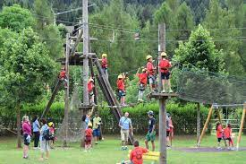
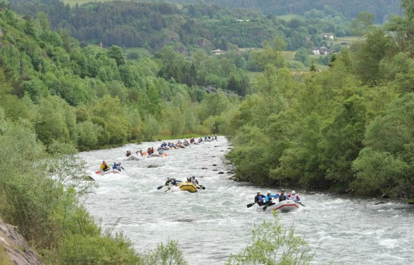
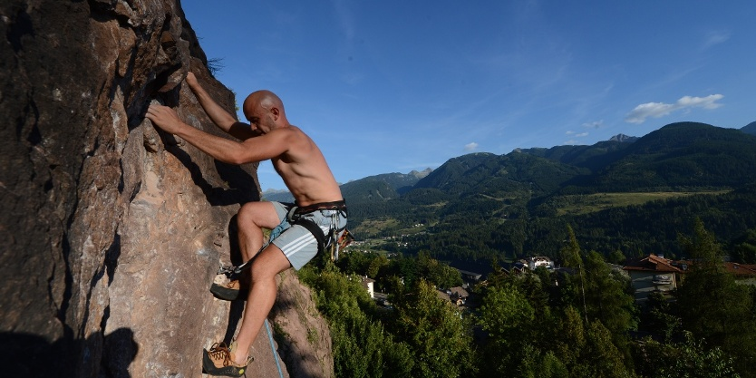
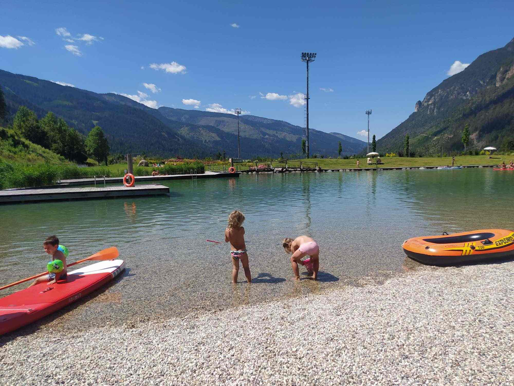

Impianti Sportivi

Altre attività
-
Adventure park SUAN
l parco avventura SUAN PARK è una tipologia di parco divertimenti, costituito da diversi
percorsi sospesi posti a varie altezze da terra che, con l’aiuto di liane, ponti tibetani,
teleferiche, reti e passerelle, permettono di passare da un albero all’altro o su apposita
struttura artificiale, in totale sicurezza.
Non è necessario essere degli acrobati per potersi divertire. Le attività del parco sono
destinate a chiunque abbia voglia di provare la forte emozione di stare sospesi fra i pini, i larici
e gli abeti della magnifica Val di Fiemme per sfidare i propri limiti in totale sicurezza!
Tre percorsi differenti per lunghezza e altezza dal suolo. Compresa nei percorsi BLU e NERO
anche una doppia teleferica di 160 m di lunghezza totale per volare sopra il torrente Avisio!!
PERCORSO NERO: per ragazzi e adulti di statura >145 cm, con attraversamento del torrente
Avisio.
PERCORSO BLU: per bambini, ragazzi e adulti di statura >125 cm, con attraversamento del
torrente Avisio facoltativo.
PERCORSO VERDE: per bambini dai 3 anni in su.

-
Rafting
Attivo da ormai più di 20 anni sul territorio, vanta una conoscenza perfetta del torrente Avisio e
una grande esperienza delle propie guide.
Con sede a Lago di Tesero, presso il laghetto, Avisio Rafting offre la possibilità di provare in
sicurezza l'emozione della discesa in gommone o in canoa del torrente Avisio.
La durata è di circa 3 ore, alla portata di chiunque sappia nuotare dai 6 anni in su
Per partecipare è necessaria la prenotazione.
A disposizione ampia zona attrezzata con doccie calde e spogliatoi, bar, ristorante e area picnic.
Nel costo del biglietto è incluso il servizio fotografico completo della discesa!

-
Arrampicata
In palestra o su roccia, a Stava o Cavalese

-
Biolago
Uno specchio d’acqua cristallina si aggiunge con armonia in un’area vitale e sportiva, fra la
nuova pista ciclabile, il campo sportivo, lo skate park e il parco giochi.
In questa oasi di relax e divertimento mancava solo l’acqua: ora c'è il biolago, con una
superficie di 5.000 metri e una profondità massima dell’acqua di 1.30-1.50 metri.
Un luogo di aggregazione e socializzazione, dove rilassarsi al sole in un prato verde o dove
fare un tuffo nell'acqua fresca di montagna.
La balneabilità è garantita dal ricambio d’acqua e dalla presenza di piante acquatiche adatte
alla depurazione. Nel rispetto della natura la fitodepurazione sostituisce preparati chimici come
il cloro e altri additivi, evitando che sostanze nocive si riversino nei sistemi fognari.
